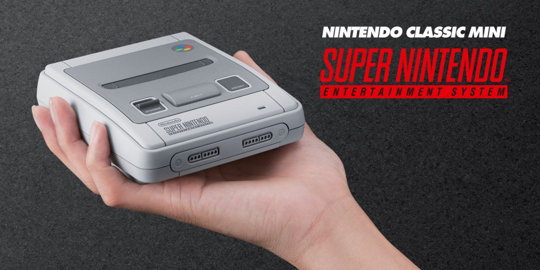
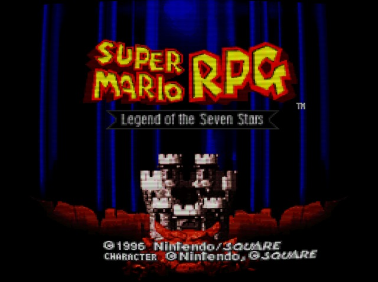
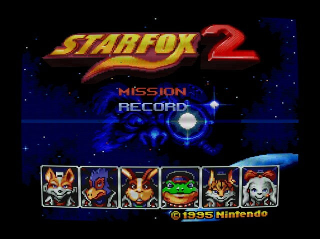

Nintendo’s second foray into shrinking its home consoles into adorable nostalgia boxes focuses on the 16-bit powerhouse. It launches on the 29th September so let’s talk about it…

‘Now You’re Playing With Super Power’
Nintendo’s decision to create a tiny replica of the original NES was a masterstroke so it was only a matter of time before they repeated the process with the Super Nintendo. The SNES Classic Mini plays host to 21 titles from the huge SNES library and the choices made here are interesting, obviously you can’t please everyone but it’s hard to argue with the quality of the lineup.
For reference the lineup consists of:
- Action: Contra III: The Alien Wars, Mega Max X, Super Ghouls ‘n Ghosts, Super Metroid
- Platformer: Donkey Kong Country, Kirby Super Star, Super Mario World, Yoshi’s Island
- RPGs: Final Fantasy III, Legend of Zelda: A Link to the Past, Secret of Mana and Super Mario RPG
- Racing: F-Zero, Super Mario Kart
- SHMUP/Rail Shooter: Star Fox, Star Fox 2
In addition to those the West also gets:
- EU/NA: EarthBound, Kirby’s Dream Course, Street Fighter II Turbo: Hyper Fighting, Super Castlevania IV and Super Punch-Out!!
Whereas the Japanese market gets:
- JP: Fire Emblem: Mystery of the Emblem, The Legend of the Mystical Ninja, Panel de Pon, Super Soccer and Super Street Fighter II: The New Challengers
The regional differences are interesting, some curious swaps, especially Street Fighter…
Trimming The Fat
Having to select 21 titles from a library stretching into the many hundreds is a daunting task and I think Nintendo have done a solid job selecting bona fide classics with the possible exception of Kirby’s Dream Course in the West and Super Soccer in Japan but those do add to genre diversity.
There are some genuine classics missing such as Chrono Trigger and ActRaiser with entire genres that were massive during that era totally unrepresented like side-scrolling beat ‘em ups or SHMUPs. No Final Fight or TMNT: Turtles in Time to represent fisticuffs and no Super Aleste/Space Megaforce or Axelay to train projectile avoidance is unfortunate.
The SNES has such a diverse library of genuinely great titles, having to choose which titles make it onto the device must’ve been tough.
The NES Classic Mini came with 30 games so I wonder what made Nintendo make the SNES Mini limit 21. The games definitely take up more space but storage space isn’t that expensive these days.
Ultimately you have to put a cutoff point somewhere but seeing popular genres unrepresented does feel like a mistake, maybe they’ll make an appearance on a theoretical SNES Classic Mini 2?
Import Woes
As someone in the UK the RPG titles are especially interesting as three of the five never came out in Europe originally and this will be the first time they’ll be getting some kind of physical release over here. Those titles being EarthBound, Final Fantasy III and Super Mario RPG: Legend of the Seven Stars.

Whilst we’ve had the ability to play those games via Virtual Console releases and emulation there is something nostalgically satisfying about knowing we’ll finally get to play those games with a SNES controller on a machine that looks like a SNES.
Final Fantasy III is the Western name for Final Fantasy VI due to various games not releasing in all territories. With Final Fantasy VII on the PlayStation, naming finally got back on track.
As an RPG fan Final Fantasy III, which is actually Final Fantasy VI, was one of those games that I used to scrutinise magazines for information on. We rarely got Square’s RPG output in Europe until PS1-era Final Fantasy broke the deadlock (and even then we missed out on a lot of stuff that got North American releases) so any scraps about these massive adventures were hastily absorbed.
At the time I was saving up to import it, but when it finally released in 1994 it turned out that without a hardware modification to a PAL SNES it wouldn’t work even with an import game converter. I believe Super Mario RPG also suffered from this issue, and with no European release in sight for either of those games I never got to play them until many years later via emulation and ultimately Virtual Console releases.
Finally being able to own these games in a physical format (albeit one that is still emulating them) feels like a milestone to me, 15 year old me would be extremely excited right now!
Scouring the Internet to see if there were any titles that just never came to North America in a similar vein I was surprised that the third entry in Quintet’s so-called Soul Blazer trilogy, Terranigma, never saw an official NA release.
A cult classic today, this action RPG is often considered the developer’s best work. This would’ve been a lovely addition to the SNES Classic Mini, offering a similar “I can play it finally!” feeling for North American fans.

‘Roger. I’m heading back to Corneria’
The big surprise when Nintendo announced the SNES Classic Mini is that Star Fox 2 would finally be officially released after 22 years. I’m beyond excited to finally see what the final form of this game looks like!
Dylan Cuthbert, developer on the original Star Fox and the ill-fated sequel, has gone on record as saying the game was fully finished and had gone through the full Mario Club testing process before being shelved due to the then impending 1995 launch of the Nintendo 64. This of course ended up being delayed but Star Fox 2 never got put back on the release slate.
A variety of beta versions of the game have surfaced with the most fully-featured getting tidied up and fan-translated by the well known Aeon Genesis hacking group and whilst this version is playable from start to finish it is missing elements and features from the final release according to Cuthbert.
As a huge Star Fox fanboy I can’t wait to see how it compares. Star Fox 2 being on the SNES Classic Mini is such an unlikely thing to happen it’s worth the asking price for that alone.
Closing Thoughts
A big part of the draw for these things is nostalgia and the SNES Classic Mini hits all those notes for me personally, the SNES was both the first console and the first 16-bit machine I had permanent access to as I’d mostly played games on my faithful 8-bit Amstrad CPC.
I’d played other consoles around friend’s houses like the Sega Master System and Megadrive (in my experience the NES was far rarer here in the UK) but the good old Super Nintendo was mine, because of that it holds lots of happy memories. I’m rather attached to the curvy grey shell in ways that the original NES Classic Mini could never manage.
I’m looking forward to putting the machine through its paces when mine arrives later in the year. In the run up to the release though I plan on seeing how each game stands up after all these years and writing a bit about each of them.